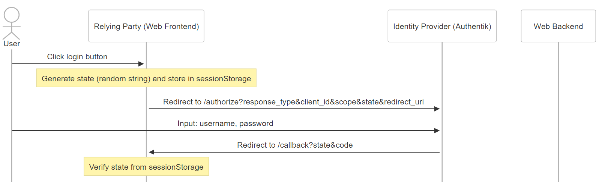
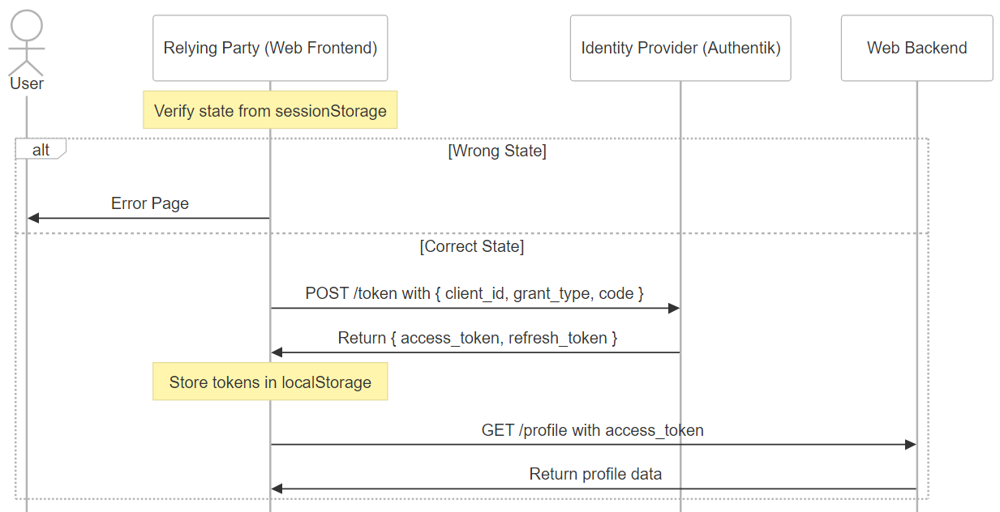
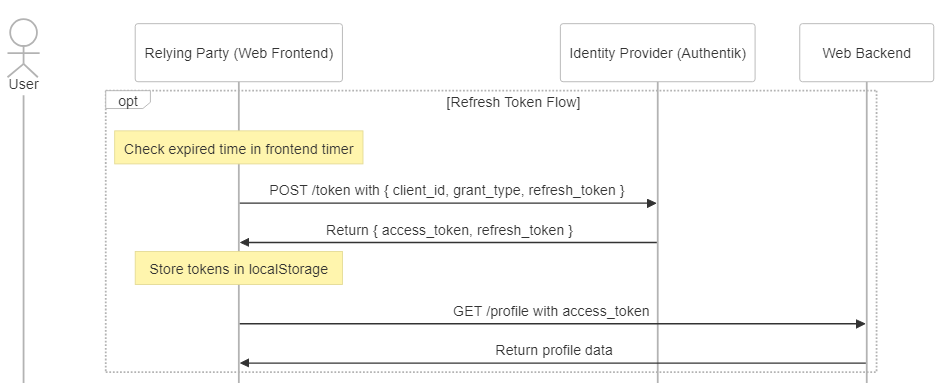
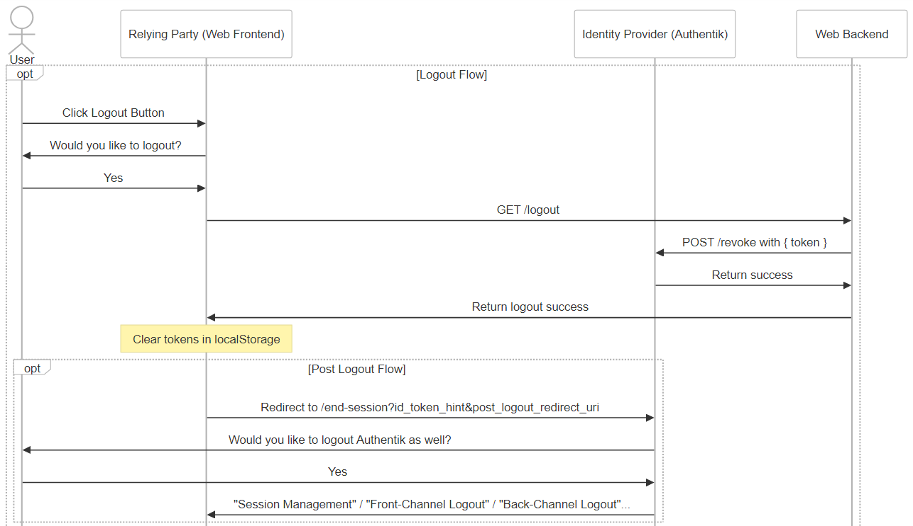
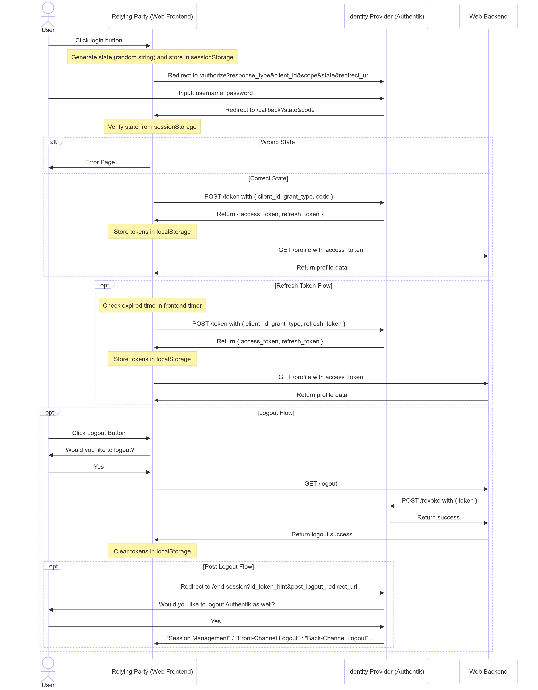

初探 OIDC ─ 揭開我們每天都在使用，卻不了解的黑盒子
我多年前曾經串過 Google Oauth2，現在想要把技術債一次補齊，因此這篇文誕生了！🎉
OIDC 是建構於 Oauth2 之上的一種"身分驗證"協議，常見的 Flow 有三種，本文將著重介紹我所使用的 Authorization Code Flow。
注意：請不要把 Oauth 與 OIDC 混為一談，Oauth 是一種"授權"協議，沒有驗證功能，access_token 本身只單純作為取得某權限的令牌使用，而且在 Oauth 中你沒辦法單純用 access_token 解析出他是誰。
不過 OIDC 就不同了，可以用作身分驗證之外，他的 access_token 通常是 JWT，你可以透過 decode JWT 來獲得 payload，進而得知該名使用者的基本資訊。
關於身份定義那件事
在講述任何流程之前，我喜歡先把角色定義好，避免流程搞懂但角色混淆而不知如何應用的情況 😥。
- User: 一般使用者 😎，在 OAuth2 中稱作 Resource Owner，在 OIDC 中則直接改為 End-User 方便理解。
- Relying Party (RP): 此為 OIDC 規範之名詞，在 OAuth2 當中簡單稱作 Client，在這個例子指的是 SPA 架構下的網站前端 💻。
- Identity Provider (IdP): 我這邊用的是 Authentik，常見的有 Google, Facebook, Line...等第三方登入驗證服務，在 OIDC 規範中被稱作 OP (OpenID Provider) 🔑。
- Web Backend: 也可以稱作 Resource Server 🔐。
1. 重導向的登入流程

1.1 使用者點擊登入
1.2 前端隨機產生 state 並儲存在 sessionStorage 內
1.3 前端將使用者導向 Authentik 的登入頁面，一併帶上 state, redirect_uri 等參數
1.4 登入成功後 Authentik 根據 redirect_uri 導回前端的 /callback 頁面，並帶上 state, code 參數
在這個階段，Authentik 成功得知了該使用者是誰，並且將他導回到我們的前端頁面，但此時網頁前端還沒有取得對應的 access_token，只有拿到 Authentik 回傳的 state 跟 code 而已。
補充說明：
在這邊也可以直接請 Authentik 把 access_token 帶在網址列上回傳給你，省略回傳 code 的步驟直接完成登入流程。這也是所謂的 OIDC Implicit Flow，屬於流程相對簡單，但安全性相對較低的一種方式。
2. 取得 access_token

2.1 驗證 Authentik 帶回來的 state 跟當初儲存在 sessionStorage 是否相同
2.2 若不同，則顯示錯誤給使用者
2.3 若相同，則用 POST 方法打向 /token 並帶上 code 等參數 (Content-type: application/x-www-form-urlencoded)
2.4 Authentik 回傳 access_token, refresh_token
2.5 前端將這兩個 token 儲存至 localStorage
2.6 前端開始與 Web Backend 互動，進入一般的登入流程，例如把 access_token 帶在 Authorization Header 裡面：Authorization: Bearer ${access_token}
補充說明：
基本上在 Oauth2 當中，所有的 GET endpoint 都是使用 queryString 傳遞參數；而 POST endpoint 則是使用傳統 form data 將參數帶在 body 的方式，型別為：
Content-type: application/x-www-form-urlencoded。
更多詳細的定義你可以在 這裡 找到。
3. Refresh Token 的流程
RFC 6749 1.5: Refresh tokens are issued to the client by the authorization server and are used to obtain a new access token when the current access token becomes invalid or expires, or to obtain additional access tokens with identical or narrower scope.
refresh token 的最大作用是在安全性的前提下，盡量保持使用者的登入狀態，也可以在權限改變的情況下重新請求一個 scope 縮小的 access token，本質上是一種為了使用者體驗而生的設計，無須重整也可以拿到新的 access token，下面讓我們來看看流程圖吧：

3.1 前端可透過解析 access_token (JWT decode) 來取得 expired time，並主動設定一個 timer 到期通知
3.2 收到 timer 通知後，用 POST 方法打向 /token 並帶上 refresh_token 等參數
3.3 Authentik 回傳 access_token, refresh_token
3.4 前端將這兩個新的 token 儲存至 localStorage
3.5 重新進行 2.6 的登入流程
全程都在背景執行，無需額外通知使用者。
補充說明：
Unlike access tokens, refresh tokens are intended for use only with authorization servers and are never sent to resource servers.
由上述 RFC 6749 1.5. 這段話可以看出，refresh token 是只單純屬於 client 端與 IdP 互動的一種機制，任何把 refresh token 帶到後端的行為都是不合理的 (也會增加被竊取的風險)。
實務上我們通常會將 access token 的 expired time 設置為短時間 (ex: 15 分鐘)，而 refresh token 設置為長時間 (7 天-30 天不等)，這樣就算 access token 在與 resource server 互動時不幸被竊取，我們也可以透過 refresh token 來取得新的 access token。
有的人可能會說，那如果 refresh token 被盜取呢？為了防範這種狀況，RFC 6749 6. 提到我們可以做 Client Authentication：
Because refresh tokens are typically long-lasting credentials used to request additional access tokens, the refresh token is bound to the client to which it was issued. ..., the client MUST authenticate with the authorization server as described in Section 3.2.1.
Section 3.2.1: A client MAY use the "client_id" request parameter to identify itself when sending requests to the token endpoint.
3.2.1 章節 中提到： 在打向 /token endpoint 的時候，我們可以在 body 帶上 client_id / client_secret 來自證身分，或是 follow 第 6 章節 提供的 Basic Auth Header 範例：Authorization: Basic ${base64_encode(client_id + ":" + client_secret)}，以上兩者都是合理的驗證方式。
最後，refresh token 可以設置成同時間只能存在一個，因此就算 client_id, client_secret 都被駭客盜取了，駭客也拿到了 refresh token，使用者也只需要在你的網站上重新登入便可以拿到新的 access token 跟 refresh token，此時駭客手上的 refresh token 也就隨之失效了。
除了上述的安全性問題以外，前端還有一些增進 UX 的優化可以實作：例如可以在快要到期前提早取得新的 token，避免使用者操作時發生錯誤；或是重新登入用 AJAX 背景執行，避免網頁產生使用者非預期的重整行為等。
4. Logout
Logout 的流程可以分為四種，分別是：
- RP-Initiated Logout
- OpenID Connect Session Management
- OpenID Connect Front-Channel Logout
- OpenID Connect Back-Channel Logout
後三者主要是定義 IdP-initiated logout flow，也就是由第三方"主動"發起的登出請求，由於篇幅有限，就先容許我不展開說明了。
這篇文章主要會聚焦在 RP-Initiated Logout 的部分，我們一樣先來看流程圖吧！

4.1 先確定使用者登出的意願，前端可以跳出提示彈窗作雙重確認。
4.2 前端透過 AJAX 打向後端 /logout，等待回應。
4.3 後端將 client_id 以及 client_secret 放入 Basic Auth Header (ex: Authorization: Basic ${base64_encode(client_id + ":" + client_secret)})，然後打向 IdP /revoke 做 token 的撤銷 (若有實作 cookie session 也同步在這一步驟清除 session)。
4.4 後端確認註銷成功以後回覆前端 logout success。
4.5 前端清除 localStorage 中的 token，到此，一般的登出流程就算完成了。
Optional:
4.6 可根據專案需求決定是否進入 post logout 流程，若有需要則將使用者重導向至 IdP /end-session。
4.7 關於 /end-session，每個 OpenID Provider 的實作不同，以 Authentik 為例，會是一個網頁上面寫著 "你已成功登出某服務"，下面有按鈕寫著 "一併登出 Authentik"。
4.8 若使用者點擊一併登出，則意味著他也一併登出了 IdP 的 session，下次重新登入時需要重新輸入 Authentik 的密碼 (若否，則下次登入時會跳到第三方閃一下馬上回到我們網站，用 IdP 記憶的帳號自動登入)。
4.9 在 IdP 登出後，利用前面提到的 OpenID Connect Session Management, OpenID Connect Front-Channel Logout, OpenID Connect Back-Channel Logout 其中一種 Flow 來讓其他 RP 及時接收到 IdP 登出的訊息，然後主動登出那些 RP。
補充說明：
如果沒有進入 post logout 流程，則下次使用者登入我們服務時，導去 Authentik 的瞬間會馬上導回來，使用者不需要重新輸入帳密 (因為 IdP 的 session 並沒有被清除)，乍看之下很方便，但當他需要切換帳號時就會遇到困難。
另外有的人認為需要等到確定 revoke token 成功後再清除後端服務的 session 還有前端的 localStorage 等資訊，不然流程會不夠嚴謹，但我在 spec 中翻到了這麼一段話：
It is up to the RP whether to locally log out the End-User before redirecting the User Agent to the OP's Logout Endpoint.
規範中提到我們可以根據商業邏輯來更改登出的順序性，並不一定要依賴於 revoke token 的正確性或是等待第三方的回覆才能繼續進行登出。
On the other hand, some logout notification methods from the OP to the RP are unreliable and therefore the notification might not be received.
spec 中的這段話也同樣表明依賴於第三方回覆有時是不可靠的，所以 RP 在跟 IdP 互動前預先登出可以說是合理行為 (畢竟也已經取得使用者同意)。
p.s. Authentik 官方對於
/revoke的實作並沒有如同規範RFC 7009的建議加上 CORS, 這點對於前後端分離的架構要實作登出不太友好, 因此我有去 github 上提 issue: https://github.com/goauthentik/authentik/issues/11057, 這點就只能希望官方盡快加上了~
最後的最後，流程圖就會長這樣：

希望我有把這整套 OIDC 的流程解釋清楚，幫助各位在使用第三方登入服務時更知道其背後的脈絡！那麼我們下篇文章見 👋
References
The OAuth 2.0 Authorization Framework (RFC 6749): https://datatracker.ietf.org/doc/html/rfc6749#autoid-57
OpenID Connect Core 1.0: https://openid.net/specs/openid-connect-core-1_0.html#Terminology
深入淺出 OpenID Connect (一): https://shuninjapan.medium.com/%E6%B7%B1%E5%85%A5%E6%B7%BA%E5%87%BA-openid-connect-%E4%B8%80-8701bbf00958
2022 鐵人賽 Identity Management: https://ithelp.ithome.com.tw/articles/10300430
OpenID Connect RP-Initiated Logout 1.0: https://openid.net/specs/openid-connect-rpinitiated-1_0.html#RPLogout
OpenID Connect Logout: https://medium.com/@robert.broeckelmann/openid-connect-logout-eccc73df758f